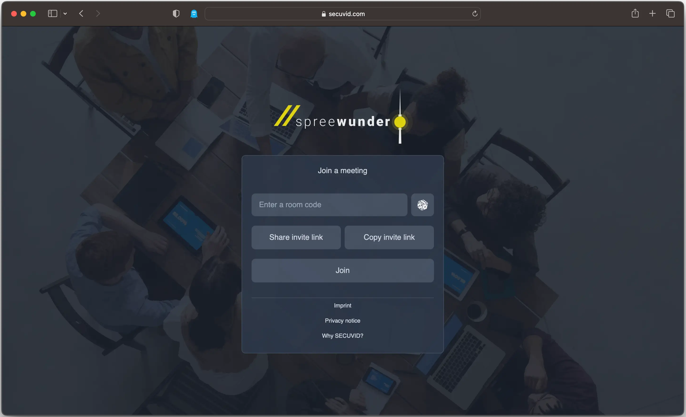

SECUVID
SECUVID is a web-based video communication system that allows for easy communication with enhanced confidentiality protection. SECUVID uses end-to-end encryption to protect audio and video data, meaning that the communication data is not visible to anyone other than the participants in the conversation. The system is designed to be easy to use, works for both one-on-one and group conversations, and avoids compliance issues with regulations such as GDPR.
My Contribution
As a frontend developer on the SECUVID project, my role involved the following:
- Set up application prototype, configured bundler (Rollup) , set up tools for testing (Storybook) and ensured consistent code style (ESLint, Prettier, Husky).
- Implemented router logic, including guards for user authentication. Implemented translation (i18next). Implemented background blur functionality using MediaPipe framework in conjunction with Insertable Streams and OffscreenCanvas.
- Implemented the use of Tailwind CSS, which resulted in a boost in development efficiency and a decrease in errors due to its functional design. Additionally, implemented the utilization of Redux for state management, which led to a decrease in errors caused by inconsistent application state.
- Collaborated closely with the technical lead and provided assistance to junior developers.
- Built a diverse array of UI elements, such as main/landing/error views, virtualised lists, chat and sidebar.